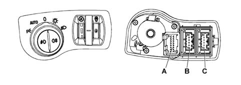

5540AA Exterior lights control operational check (C.L.E.)
- Path
- Test > 55 ELECTRICAL EQUIPMENT > 5540 EXTERIOR LIGHTING > 5540A lighting > 5540AA Exterior lights control operational check (C.L.E.)
- Kind
- test / check procedure
- Applies to
- all engines; all production periods
- Interactive page
- https://sloeber94.github.io/elrnDB-lThss/en/#/212712
Applies to: all engines; all production periods
Using an ohmmeter, check the continuity between the exterior lights selector contacts in the various positions:

Check the state of the controls at connector A:
- Posizione [0]: tra pin 1 e 11 circuito aperto, tra pin 1 e 4 circuito aperto, tra pin 1 e 5 circuito aperto.
- Posizione [AUTO]: tra pin 1 e 11 circuito chiuso, tra pin 1 e 4 circuito chiuso, tra pin 1 e 5 circuito aperto.
- Posizione [PARKING]: tra pin 1 e 11 circuito chiuso, tra pin 1 e 4 circuito aperto, tra pin 1 e 5 circuito aperto.
- Posizione [POSIZIONE]: tra pin 1 e 11 circuito aperto, tra pin 1 e 4 circuito chiuso, tra pin 1 e 5 circuito aperto.
- Posizione [ANABBAGLIANTE]: tra pin 1 e 11 circuito aperto, tra pin 1 e 4 circuito aperto, tra pin 1 e 5 circuito chiuso.
Unstable buttons operational check (fog lights, rear fog lamps)
Fog light buttons check:
- verificare, con tasto fendinebbia premuto, lo stato CHIUSO tra pin 1 e 8 del connettore A.
Rear fog lamp button check:
- verificare, con tasto retronebbia premuto, lo stato CHIUSO tra pin 1 e 7 del connettore A.
Check the instrument panel light dimmer:
- Verificare, mediante Ohmetro, che tra i pin 1 e 3 del connettore B la resistenza vari tra un minimo di 3kO ad un massimo di 11kO ruotando il selettore dalla posiziona di massimo alla posizione di minimo.
Dusk sensor adjustment check:
Using an ohmmeter, check that the resistance values in the various positions between pins 1 and 3 of connector C are as follows:
- posizione [1]: circa 1560 Ohm
- posizione [2]: circa 1360 Ohm
- posizione [3]: circa 1180 Ohm
Topics that link to this page (8)
- I01 SIDE/NUMBER PLATE LIGHTS NOT WORKING
- I02 PARKING LIGHTS NOT WORKING
- I04 SIDE LIGHTS / NO. PLATE LIGHT AND DIPPED HEADLAMPS NOT WORKING IN AUTO MODE
- I06 MAIN BEAM HEADLAMPS NOT WORKING
- I21 REAR FOG LAMPS NOT WORKING
- I22 DIPPED HEADLAMPS DO NOT COME ON IN THE "MANUAL" DIPPED HEADLAMPS CONDITION
- I24 MAIN BEAM HEADLAMPS DO NOT COME ON - WITH STEERING COLUMN SWITCH UNIT LEVER IN MAIN BEAM POSITION
- K91 INSTRUMENT LIGHTS NOT WORKING - DIMMER